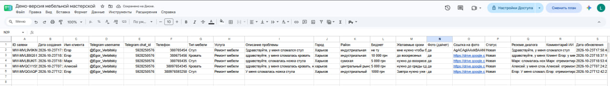
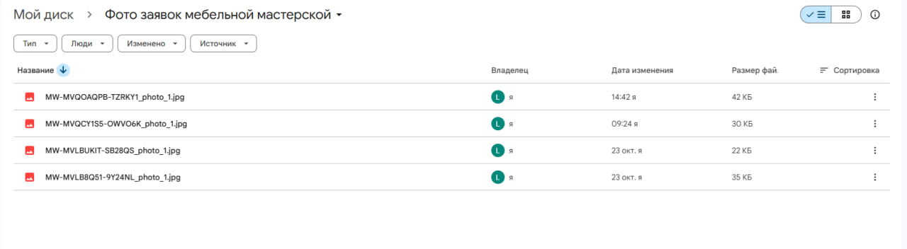

Я создаю Telegram-ботов, которые помогают бизнесу обрабатывать обращения клиентов, автоматизировать запись на услуги и систематизировать входящие заявки.
Когда ответ зависит от того, свободен ли человек, клиент ждёт — и часть клиентов просто уходит к другим.
Одни и те же вопросы о цене, свободном времени и процессе приходится печатать снова и снова — вместо того чтобы заниматься делом.
Заявки приходят из разных чатов, звонков и сообщений, и детали о том, что нужно клиенту, теряются или разбросаны по разным местам.
Проверка календаря и переписка ради согласования времени — небольшая задача, которая отнимает много времени при большом потоке клиентов.
Telegram-бот, который общается с клиентом о записи, проверяет реальную занятость в Google Calendar и предлагает другое время, если нужный слот уже занят.
Мастер тратит время на ответы клиентам, ручную проверку календаря и согласование записи сообщение за сообщением — время, которое можно было бы потратить на клиентов, которые уже на месте.
Telegram-бот в естественном диалоге выясняет, что нужно клиенту, проверяет подключённый Google Calendar на реальную свободность времени и подводит клиента к подходящему варианту — автоматически предлагая альтернативу, если первый выбор занят.
Меньше переписки о свободном времени вручную, меньше пропущенных заявок вне рабочих часов и календарь, который отражает реальную занятость.
Telegram-бот, который собирает информацию о повреждённой мебели, включая фото, и оформляет всё в запись Google Sheets, с которой владелец бизнеса может сразу работать.
Мастерам по ремонту мебели нужна чёткая информация о повреждении, чтобы понять заявку, — но фото и описания, присланные в чат, могут теряться, и их сложно найти позже.
Telegram-бот задаёт клиенту нужные вопросы о мебели и повреждении, при необходимости собирает фото и автоматически сохраняет всё в строку Google Sheets — фото при этом попадает в отдельную папку и привязывается прямой ссылкой к записи.


| Бот для записи на приём | Бот для сбора заявок | |
|---|---|---|
| Сфера применения | Салоны красоты и мастера маникюра | Ремонт мебели и локальные сервисы |
| Какую проблему решает | Ручная запись и проверка занятости | Разрозненные данные заявок и фото |
| Диалог в Telegram | Подводит клиента к доступному времени | Собирает структурированные данные заявки |
| Интеграции | Google Calendar | Google Sheets, папка для хранения фото |
| Какие данные обрабатывает | Запрошенное время, статус занятости | Тип мебели, детали повреждения, фото |
| Польза для бизнеса | Меньше переписки по записи, меньше пропущенных броней | Систематизированные записи, быстрее оценка заказа |
Конкретный функционал и интеграции зависят от задач каждого клиента — вот направления, в которых я обычно работаю.
Диалоговые боты, которые понимают запрос клиента и отвечают естественно.
Структурированные диалоги, которые собирают из каждой заявки нужные бизнесу детали.
Запись с учётом календаря, которая проверяет реальную занятость перед подтверждением времени.
Уведомления в нужное место в момент поступления новой заявки или записи.
Данные заявок и записей автоматически попадают в таблицу, которой вы уже пользуетесь.
Чёткая, систематизированная запись каждой заявки вместо разрозненных чатов.
Разбираюсь в проблеме бизнеса — что сейчас происходит медленно, повторяется или теряется.
Определяю сценарий и функции, которые реально нужны для решения этой проблемы.
Пошагово создаю согласованную автоматизацию.
Проверяю ключевые сценарии перед запуском.
Передаю готовое решение вместе с инструкцией по использованию.
Хостинг, подписки, постоянная поддержка или неограниченные правки не включены, если это отдельно не согласовано в рамках проекта.
Диалоговые боты для обработки обращений, сбора заявок и записи на услуги — с нужными каждому бизнесу интеграциями.
Да — бот может в реальном времени проверять подключённый Google Calendar и предлагать альтернативное время, если слот занят, как показано в Проекте 01.
Да — бот может задавать структурированные вопросы и собирать фото прямо в диалоге, как показано в Проекте 02.
Да, заявки можно автоматически оформлять в запись Google Sheets, включая ссылки на связанные фото.
Да — каждый проект начинается с этапа исследования, на котором сценарий выстраивается под конкретный бизнес.
Зависит от объёма и задействованных интеграций — сроки согласовываются после этапа планирования.
Стоимость зависит от объёма и интеграций. Напишите мне с деталями о вашем процессе, чтобы мы его обсудили вместе.
В комплект входят документация по настройке и инструкция по передаче. Постоянную поддержку можно согласовать отдельно при необходимости.
Расскажите о своём текущем процессе — вместе определим, что можно автоматизировать.